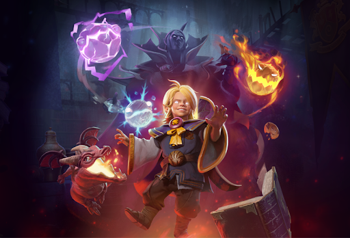

Heroes adalah elemen penting dari Dota 2, karena jalannya pertandingan tergantung pada intervensi mereka. Selama pertandingan, dua tim lawan memilih lima dari 119 pahlawan yang mengumpulkan pengalaman dan emas untuk tumbuh lebih kuat dan mendapatkan kemampuan baru untuk menghancurkan Kuno lawan. Kebanyakan pahlawan memiliki peran berbeda yang menentukan bagaimana mereka mempengaruhi medan perang, meskipun banyak pahlawan dapat melakukan banyak peran. Penampilan pahlawan dapat dimodifikasi dengan peralatan.
Berikut adalah heroes didalam Dota 2
Invoker

Carl, the Invoker, is a ranged intelligence hero who is very difficult to master. He is unique in that he possesses a total of 14 abilities in his arsenal; three of them - Quas, Wex, and Exort - are reagents and one is his special ultimate Invoke. The three abilities he learns throughout leveling up can have three instances, which serve as the basic ingredients or components for him to create a new ability using his ultimate.
Once the reagents or elements are combined, he can invoke one out of ten different abilities. All of his invoked abilities are capable of a multitude of actions, from damaging enemies to aiding his allies, and even saving himself from danger. His three reagents can be upgraded up to level 7 which determines the power and potency of his invoked abilities, making it more powerful than an ordinary spell.
Juggernaut

Yurnero, the Juggernaut, is a melee agility hero whose abilities allow him to sprint into battle and recklessly devastate enemies in an impenetrable flurry of blades.
His abilities grant invulnerability and spell immunity, turning him into an unstoppable force on a hairpin. Juggernaut is strong both offensively and defensively, and deals heavy damage both physical and magical with his Blade Fury and Omnislash ultimate, but he possesses below average strength and intelligence attributes, so he does not have as much health and mana as other heroes and is vulnerable when his abilities are on cooldown. For this reason, although his abilities make him powerful even in the early game, he cannot charge into forces without restraint until farmed and is usually played as a carry.
Void Spirit
Inai, the Void Spirit, is a melee intelligence hero that relies on the element of surprise to blast apart foes with the power of the void. He plays like no other hero, relying on a wide variety of skills that allow him to put his enemies out of position while quickly jumping in and out of combat. Using his Aether Remnants, Inai can start and end any fight in seconds by forcing enemies to attack remnants of himself that guard from all angles. The void is both sword and shield for Void Spirit, whether he takes a quick repose in the aether to teleport to an area of his choice with explosive force, or shields himself in volatile energy that slays the weak and nullifies the attacks of the mighty. Should anything manage to survive the Void Spirit's onslaught, he calls upon his mastery of the ultimate Astral Step technique, dashing through space and time to attack and mark enemies for death not once, but twice.
Ember Spirit
Xin, the Ember Spirit, is a highly mobile and versatile melee agility hero whose abilities make him a slippery foe who can dance around his enemies at will. His skill set allows for aggressive assaults on other heroes, as he can engage on them from long range using Sleight of Fist and tie them down with Searing Chains. His Flame Guard ability deals damage in a small area around him while shielding him from magic nukes, making him a force to be reckoned with by enemy casters. Finally, his Fire Remnant spell enables him to engage, escape, or move instantaneously around the map, allowing him to appear where the enemy least expects and disappear just as quickly.
Masih banyak lagi hero - hero yang terdapat di game DOTA 2. Semua hero diatas merupakan beberapa hero saja yang terdapat didalam game. Untuk lebih detailnya, Download game DOTA 2 sekarang di Steam. Jangan lupa verifikasi akun kalian jika sudah bermain agar bisa memainkan ranked mode!.